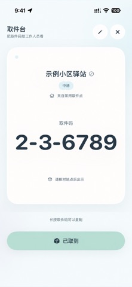
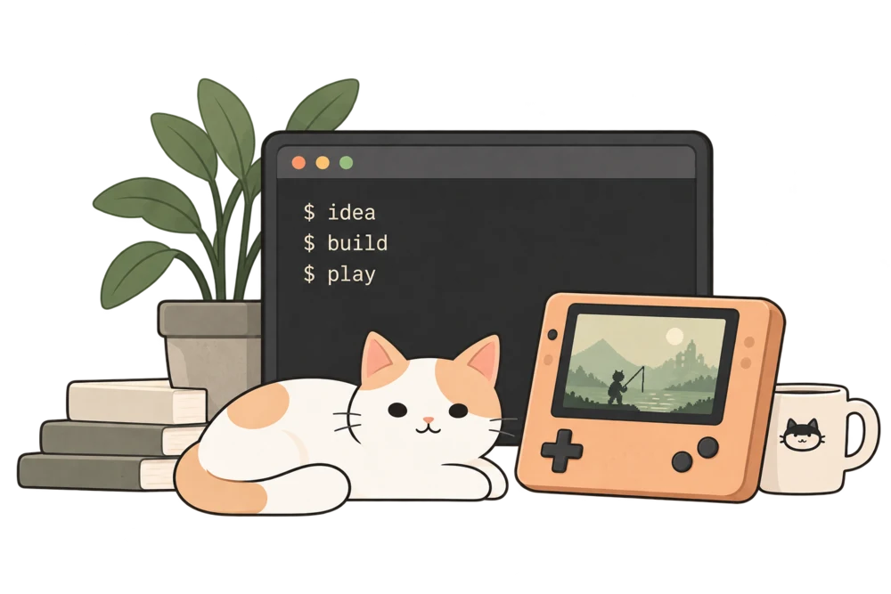
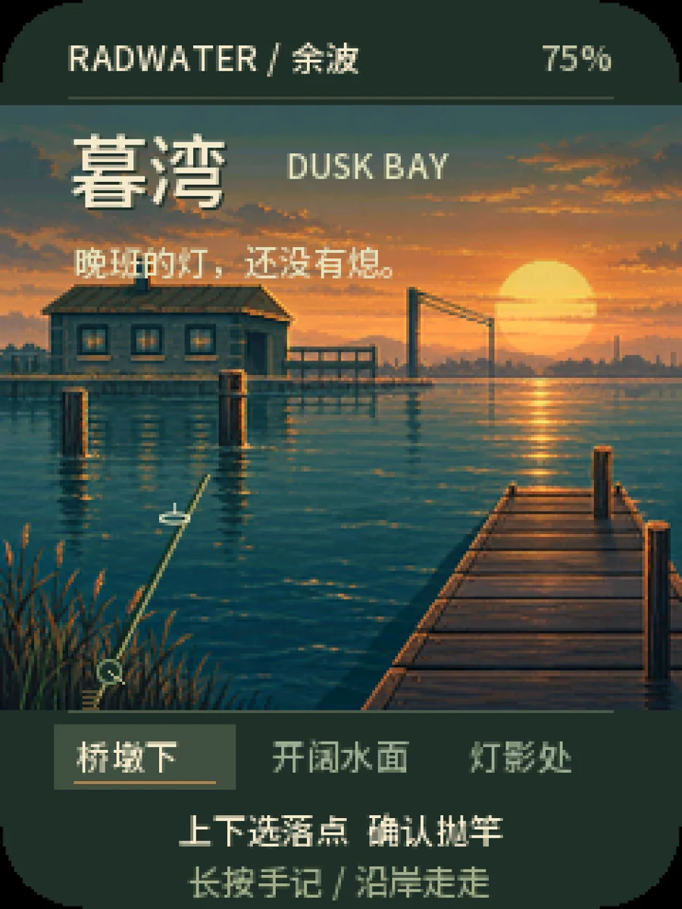
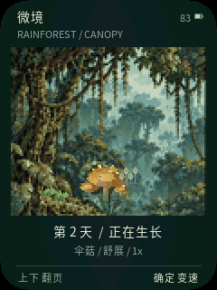
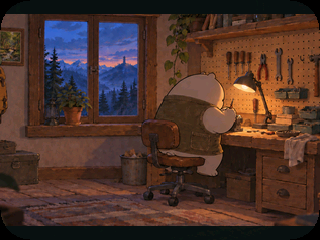

iPhone · 取件码收件箱
收下
取件码放一起，到站直接看。
从短信、文字和截图导入取件信息，用小组件或大字模式查看。请人代取时，按地点整理好再分享。识别和记录都留在手机里。


iPhone · 取件码收件箱
取件码放一起，到站直接看。
从短信、文字和截图导入取件信息，用小组件或大字模式查看。请人代取时，按地点整理好再分享。识别和记录都留在手机里。
macOS / Windows · 记忆与资料
换一段对话，也能接着之前的工作。
在电脑上保存记忆、项目进度和 Markdown 资料，让不同客户端通过 MCP 访问。可以查看来源，也可以自己备份和管理数据。
macOS · 菜单栏文件搁板
待会儿要用的文件，先搁在菜单栏。
从 Finder 拖进来，再拖到聊天、邮件或浏览器。只暂存文件引用，原文件留在原处；常用的可以固定下来。

AI Passport / Cardputer ADV · 离线游戏
水质尚未达标，垂钓照常进行。
AI Passport 版「余波：暮湾」现已发布。在苇岸、暮湾和星潭钓鱼，翻看旧物上的记录，读完四章水边往事。咬钩会等你，可以随时放下。
croc 的独立 macOS 界面。用口令收发文件，查看进度和传输结果。0.3.2
下载把分散的应用报错归成问题，保存处理记录，通过 HTTP 和 MCP 查询。
GitHub自托管的团队记忆与知识服务，按成员和空间管理资料及访问权限。
源码给 DeepSeek Harness 按需查找和调用 Skills、MCP 工具，减少常驻工具目录。
源码几件还没公开下载的小东西。

在 AI Passport 上养一个小生态。选雨林、深海或别的环境，放入生命，看它们觅食、跟随和避让。

AI Passport 上的五章小故事。远处的灯灭了，一个小生灵修好自己的灯，背上行囊出发。
放在桌边的墨水小伙伴。通过蓝牙显示观察到的 Codex 工作状态、回复结束和账号额度。
个人改版，基于 zt20 的 Codex Usage。
我是 Zhou Wei，平时写软件，也折腾掌机和电子小设备。
这里放一些自己做的应用、游戏和还在试的小东西。
在 GitHub 找到我